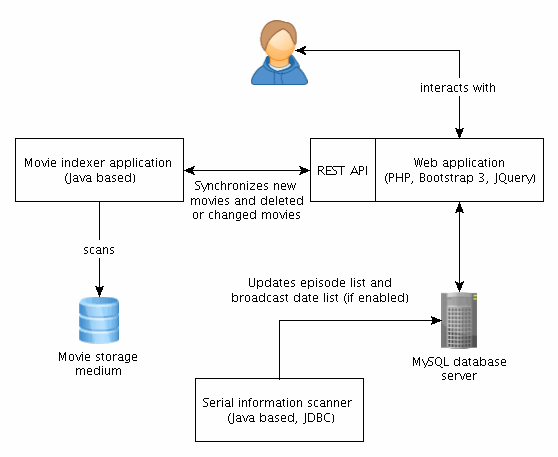

- Table of Contents
- Sidestory with Pi
- Previous versions
- MovieManager
- Features
- Screenshots
I barely can tell how much I like, love, appreciate, prefer movies and watching (good) movies. »Watching and collecting movies« is more than a hobby for me for - at least - the last decade. I do not collect DVDs or Blu-rays but I collect records of movies broadcasted by the public and freely (besides the mandatory fee for Der Rundfunkbeitrag, previously GEZ) available (or receivable) televion networks (öffentlich-rechtliche as well as private) via DVB-S (DVB-S2) or DVB-T (DVB-T2).
But if you think that I have a huge collection of 1080p FHD movies with Dolby 5.1 audio and other bells and whistles you are wrong. The drawback of TV recordings is that they contain a broadcast network logo (usually in the top right edge) and contain ads which I need to cut out. I also do not store the movies in FHD. For a long time (until mid 2015) I stored the files as 360p MPEG4 videos before I ramped up the quality to 576p H264 video. In return to this drawback my movie collection counts 4,500 movies and I do not want to know the size for it if all movies would be in FHD.
Sidestory: a Raspberry Pi recording solution
Quite some time ago I built a single personal recording station using a Raspberry Pi and a DVB-T USB 2.0 device to record movies automagically. I even planned and built a device to manage a cluster of multiple Pis to record whithout any direct user interaction. The following photo shows the finished prototype. The operation is quite simple: the microcontroller controls the five MOSFETs. Every Raspberry Pi is powered from a screw terminal. The microcontroller has a serial (UART) connection to the master of the recording cluster. The master can then send commands to the microcontroller to switch the different ports. Furthermore the microcontroller has the ability to cut the power to the master Pi and switch it on after a specific amount of time. Therefore the whole cluster can be turned off when no action has to be performed and the master can wakeup from time to time to check for any pending actions. So the power consumption is reduced to the absolute minimum to operate the cluster.

The intelligent multi-load switch which was intended to switch multiple Raspberry Pis (arranged in a cluster) on and off. The MOSFETs are driven by an Atmel AVR ATtiny2313 microcontroller and the whole board is 5V based.
I really was glad to have the opportunity to build such a »complex« system. It is a lot of fun to connect different (hardware) components together and create a system (software) which can work autonomous and perform the recordings and can decide by itself to turn on different devices to fulfil all the actions. For example: if two telecasts are scheduled and overlap each other the master has to decide to turn on a second unit to record it. I also planned to create a file server to which the recorded movies are copied after recording. Those files can than be post processed (e.g. removing ads) and finally watched. But I got dragged away from this project at the beginning of 2016 and had to work on other important projects (e.g. MSc thesis) so that only the plans are left in my head by now.
A short historical review
A long time ago I realized that I need a way to organize all my movies in a better way than storing them in a folder and looking through them if a new movie is already in my collection. And now where I have almost 4,500 movies it is even more important for me to keep track of them. In the following a screenshot for both of my (old) two main systems for organizing movies and serials is shown:
A list of all movies as single HTML file generated by a custom index program (Java).
Three screenshots stiched together to show the control flow for organizing serial recordings: first one can choose between different serials (left), then the episode list is shown with management options (center) and for every episode the broadcast dates are listed (right) and possible existing recordings.
The Java program, which scans all my movie folders and generates the movie index HTML file from the screenshot above, is really simple: a list-file and System.out.println-single-class solution. I wrote this a long time ago (maybe in 2011) and updated the style some times. (You might find that it looks similar to Bert) But with so many movies the Javascript search function got really slow and also »dummy« files (like Thumbs.db or .DS_Store) show up in the results. Eventually this tool was not suitable anymore.
It would be totally possible to use the serial manager further since it only looks ugly but works fine. But I thought, as I developed MovieManager, that it would be nice to integrate the serials into the movie list in order to assign the episodes directly to the files to have a more direct overview over which episodes are already available as movie files and for which I have to look if they are broadcasted in the future to record them. Eventually I kicked the serial manager - together with the movie index generator - into the trash bin. With the serial manager I did the mistake of assigning a database for every serial. So if I wanted to add a serial now I had to create a new database. This is a 100% impractical and really bad design. I guess at the time when I made this system I did not anticipate to use it for more than one serial so I did not plan for this feature. (And before that I used Excel or Calc spreadsheets.)
MovieManager
As described in the last section the need for MovieManager arised from the size of my movie collection and additionally I really wanted to create a web application after dealing for so long with Linux kernel programming during my Master's thesis this year.
Therefore I started without hesitation on this some weeks ago. The plan is not to make a finished software application rather than create a basic software to let me survive. Later I plan to add features as I need them. I started with creating the database model which is shown in the following picture:
The database model of MovieManager, created with MySQL Workbench.
There are some minor design flaws in the database model but besides those the model is pretty final. For example I replaced the movie.note and serial.note field with a dedicated note table since I wanted to provide a feature like Post-It notes where multiple notes are related to one object (either a movie or an entire serial). Besides this the DB model does the trick.
The general architecture and the data flow of the MovieManager is a bit more complicated and shown by the following figure:

Architecture of MovieManager, created with yEd.
Besides the web application there are two independent applications which are written in Java: one application is a file scanner which simply scans all files in my movie folders and updates their entries in the database. This application is stored on the harddrive where I keep the movies. After I changed something I double click the JAR and the database gets updated. The Java application communicates through the web application with the database over a simple REST API which speaks JSON (one of my favorites!).
The other application is responsible for scanning the web for new broadcast dates and extracting them. It uses JDBC to directly connect to the database. Since this task is a bit more complicated and involves techniques like pattern recognition I figured that it would be best to implement it as a Java application rather than trying to jam it into a PHP script which is then called via HTTP. Furthermore this application already existed and was used for my old serial manager. So I only had to do a little rework.
By now the MovieManager is a neat little application which I really enjoy to use. All people always ask me first how long I worked on it. But for private (necessary) projects I do not track the time. To satisfy everyone I estimate that I worked around 25 - 35 hours on this project up to now.
Features of MovieManager
In the following a short list of all the features of MovieManager is presented (by far not complete or final):
- Stores movies in a central place with additional information: resolution, bitrate, audio, size and duration.
- Files are recognized by a hash which is generated by combining the filesize and the creation date of the file. In case the file path or file name changes it is still recognized.
- Changed file path or name are updated automatically. Removed files are detected and also updated.
- MovieManager provides a controlled way of deleting the data for removed entries from the database (rather than directly deleting them) via a dedicated user interface.
- Manages serials:
- Copy&Past episode name generation for quick file naming.
- Assinging movies to episodes to keep track of the »collection« state of the serial: automatic and manually.
- Provides broadcast dates for episodes.
- Serials are enriched with artwork to make the eye proud.
- Can scan for new episodes of serials to keep on with the serial as new seasons or broadcast dates are published.
- Intelligent search field which makes suggestions and is completely controllable with the keyboard to speed up the operation.
- Allows notes (Post-It) to keep track of important things related to the movies and serials.
- Shows meta informations about movies, the collection or serials.
- Created with Bootstrap 3 and jQuery for a nice and responsive GUI.
- To be continued.

{kind=link}
{kind=link}
{kind=link}
{kind=link}
{kind=link}
{kind=link}